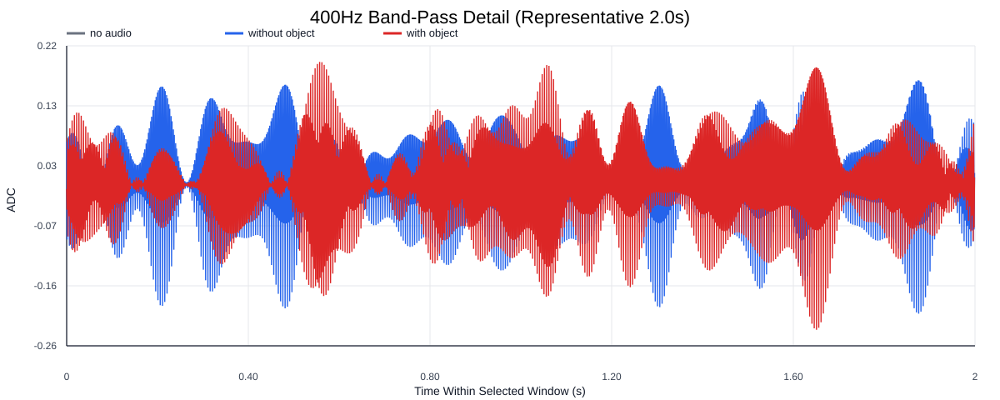
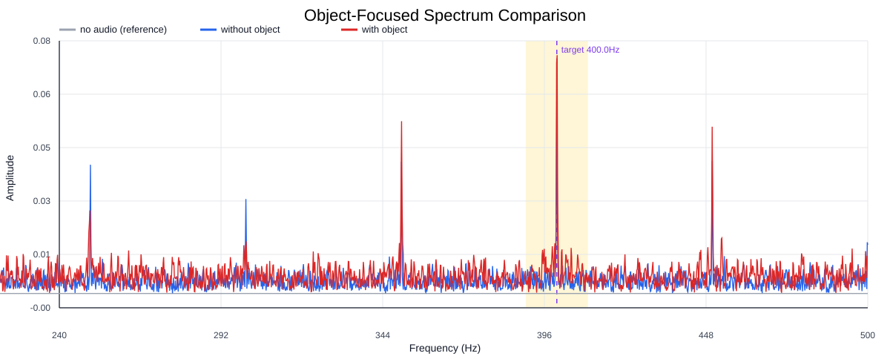
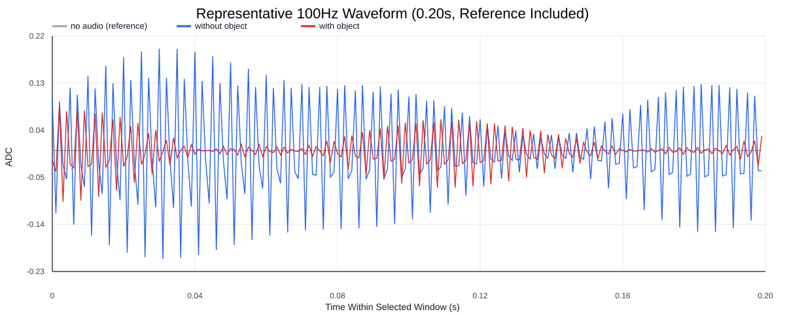
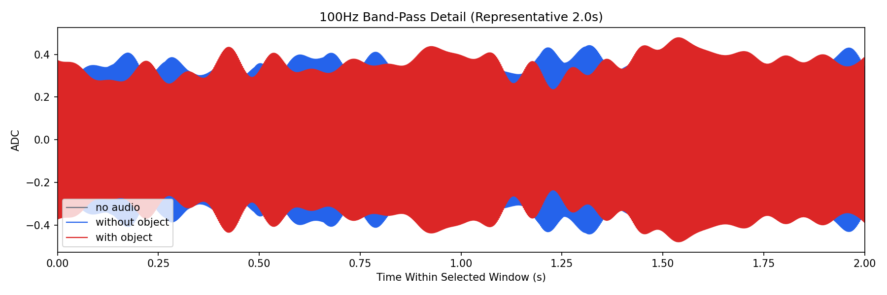
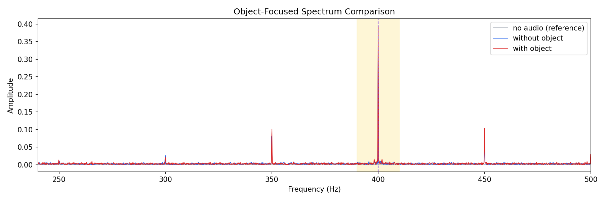
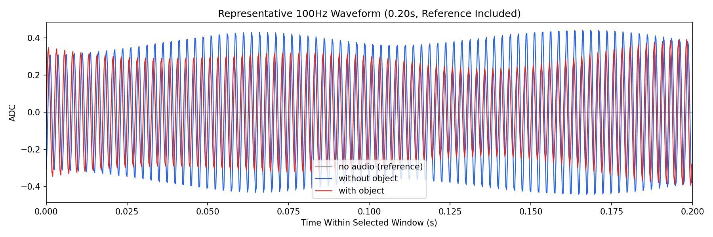

Background: F:\项目类文件夹\异物检测4.10\Data_Dual\frequency_sweep\0400Hz\repeat_02\raw\no_audio.csv
Without object: F:\项目类文件夹\异物检测4.10\Data_Dual\frequency_sweep\0400Hz\repeat_02\raw\without_object.csv
With object: F:\项目类文件夹\异物检测4.10\Data_Dual\frequency_sweep\0400Hz\repeat_02\raw\with_object.csv
| Metric | 无音频 | 100Hz无异物 | 100Hz有异物 | 无异物/无音频 | 有异物/无异物 | 有异物/无音频 |
|---|---|---|---|---|---|---|
| centered_rms | 0.005867 | 0.387623 | 0.431303 | 66.0632 | 1.1127 | 73.5077 |
| raw_target_amp | 0.000017 | 0.312890 | 0.395182 | 18860.6734 | 1.2630 | 23821.1713 |
| filtered_rms | 0.000639 | 0.228452 | 0.278248 | 357.2901 | 1.2180 | 435.1695 |
| filtered_target_amp | 0.000017 | 0.312890 | 0.395182 | 18860.6734 | 1.2630 | 23821.1713 |
| filtered_energy_ratio | 0.011875 | 0.347353 | 0.416198 | 29.2498 | 1.1982 | 35.0471 |
| window_filtered_target_amp_mean | 0.000091 | 0.319436 | 0.389276 | 3498.0168 | 1.2186 | 4262.8023 |
| window_filtered_target_amp_std | 0.000754 | 0.043296 | 0.052516 | 57.4258 | 1.2130 | 69.6552 |





